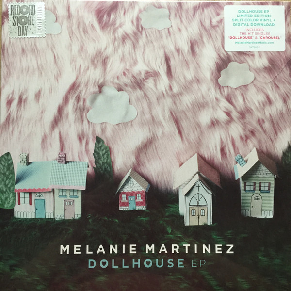

Melanie Martínez

Melanie Martínez
Nombre completo: Melanie Adele Martínez Vargas
Fecha de nacimiento: 28 de abril de 1995
Ocupación: Cantante, compositora, fotógrafa, actriz
Melanie es una cantautora, guionista, directora, actríz, bailarina, Mart y fotógrafa estadounidense de ascendencia dominicana y puertorriqueña. Desde muy pequeña ella empezó a tocar la guitarra y a cantar. Primero audicionó para el programa de talentos vocales de la televisión estadounidense The Voice y se convirtió en miembro del Equipo Adam, donde su popularidad creció rápidamente entre los fanáticos. Dentro de la quinta semana, fue eliminada, lo que posteriormente la llevó a trabajar en material original.
Álbum
Dollhouse
Dollhouse
"Dollhouse" es el primer EP de Melanie Martinez. Fue lanzado el 19 de mayo de 2014. El EP fue producido y co-escrito principalmente por Kinetics & One Love El EP cuenta la historia de una joven que lidia con su familia y su novio, que no resulta como ella quiere. La primera canción, "Dollhouse", establece la historia de fondo de la principal protagonista, que vive en una familia disfuncional que se esconde bajo una "apariencia perfecta" exterior. El EP explora temas maduros disfrazados de inocencia. "Carousel" utiliza un carnaval y un carrusel para expresar el estado de amar a alguien mientras se está atrapada en una relación unilateral, en la que el interés amoroso es inalcanzable. "Dead To Me" es la secuela de "Carousel", y muestra a Melanie intentando deshacerse de esa persona de su vida matándola en sentido figurado y olvidándose de ella. "Bittersweet Tragedy" resume su relación, en la que los momentos dulces eclipsan continuamente la disfunción.
CryBaby
Soap
"Soap" es la sexta canción de Melanie Martinez de su álbum debut Cry Baby. Se lanzó el 10 de julio de 2015 como segundo sencillo del álbum, junto con un vídeo musical promocional. La canción cuenta específicamente la historia del alter ego de Melanie, Cry Baby, que se esfuerza por decirle a su enamorado lo que siente. Se siente avergonzada y vulnerable. Teme decirle "te quiero", ya que pondría su relación en una situación incómoda, pues él tendría que responderle de la misma manera o rechazar sus insinuaciones. A la larga, ambas cosas le harán daño.
CryBaby's Extra Clutter Ep
Cry Baby's House es un lugar que Melanie Martinez creó para su álbum debut, Cry Baby, y que más tarde utilizó en su segundo álbum, K-12. Es donde vive Cry Baby y aparece en los vídeos musicales de Cry Baby, Sippy Cup, Soap, Pity Party, Tag, Mrs Potato Head y Mad Hatter. Es donde vive Cry Baby y aparece en los vídeos musicales de Cry Baby, Sippy Cup, Soap, Pity Party, Tag, You're It, Mrs. Potato Head y Mad Hatter. También aparece al principio de su primera película, K-12, en el vídeo musical Class Fight y en el anuncio del perfume Cry Baby Perfume Milk.
Pity party

K-12
"K-12" es el álbum de segundo año y el segundo disco de gran sello de Melanie Martínez. Fue lanzado el 6 de septiembre de 2019 por Atlantic Records a través de descarga digital, CD, casete y vinilo. El álbum debutó en el puesto # 3 en la lista de álbumes Billboard 200 con 57,000 copias totales vendidas en su primera semana. El álbum está situado en la escuela de Cry Baby y está contado desde su perspectiva. Según Melanie, Cry Baby sale de su vida familiar y amorosa y actúa como narradora del álbum.
After School
"After School EP", a menudo denominado exclusivamente "After School", es el cuarto extended play oficial de Melanie Martinez. Según Melanie, el EP sigue los elementos de la historia que están presentes en su segundo álbum, K-12; sin embargo, las canciones son más personales para Melanie en lugar de relacionarse con su personaje, Cry Baby.

Formulario
Referencias bibliográficas
❆ Melanie Wiki (s.f). Melanie Martinez. Recuperado de: https://melanie-martinez.fandom.com/wiki/Melanie_Martinez
❆ Wikipedia (2023). Melanie Martínez. Recuperado de: https://es.wikipedia.org/wiki/Melanie_Martinez
❆ Melanie Martínez Music (2023). Portals. Recuperado de: https://www.melaniemartinezmusic.com